Protein interaction networks have deserved a special attention for molecular biologists, and several high-throughput methods have been developed during the last years, to reveal either pairwise interactions between proteins (two-hybrid technology) or protein complexes (methods relying on mass-spectrometry). The term interactome has been defined to denote the complete set of interactions between proteins of a given organism.
Interactome data is typically represented by an un-directed graph, where each node represents a polypeptide, and each edge an interaction between two polypeptides.
The yeast interactome was characterized by the two-hybrid method by two independent groups, Uetz and co-workers [32], and Ito and co-workers [13], respectively. Surprisingly, the two graphs resulting from these experiments showed a very small intersection.
In this tutorial, we will use the program compare-graphs to analyze the interactome graphs published by from Uetz and Ito, respectively.
We will first perform a detailed comparison, by merging the two graphs, and labelling each node according to the fact that it was found in Ito's network, in Uetz' network, or in both. We will then compute some statistics to estimate the significance of the intersection between the two interactome graphs.
In this demonstration, we will compare the networks resulting from the two first publications reporting a complete characterization of the yeast interactome, obtained using the two-hybrid method.The first network [32] contains 865 interactions between 926 proteins.The second network [13] contains 786 interactions between 779 proteins. We will merge the two networks (i.e. compute their union), and label each edge according to the fact that it is found in Ito's network, Uetz' network, or both. We will also compute the statistical significance of the intersection between the two networks.
In the right panel, you should now see a form entitled ``compare-graphs''.
The form is now filled with two graphs, and the parameters have been set up to their appropriate value for the demonstration. At the top of the form, you can read some information about the goal of the demo, and the source of the data.
The computation should take a few seconds only. The result page shows you some statistics about the comparison (see interpretation below), and a link pointing to the full result file.
If you have installed a stand-alone version of the NeAT distribution, you can use the program compare-graphs on the command-line. This requires to be familiar with the Unix shell interface. If you don't have the stand-alone tools, you can skip this section and read the next section (Interpretation of the results).
We will now describe the use of compare-graphs as a command line tool. The two two-hybrid datasets described in the previous section may be downloaded at the following address http://rsat.scmbb.ulb.ac.be/rsat/data/neat_tuto_data/. These are the files uetz_2001.tab and ito_2002.tab.
compare-graphs -v 1 -Q ito_2002.tab -R uetz_2001.tab -return union \ -o uetz_2001_union_ito_2002.tab
In order to compute the difference or the intersection, you must change the -return option. For example, to compute the intersection, you shoud type.
compare-graphs -v 1 -Q ito_2002.tab -R uetz_2001.tab -return intersection \ -o uetz_2001_inter_ito_2002.tab
The program compare-graphs uses symbols  and
and  respectively, to denote the two graphs to be compared. Usually,
respectively, to denote the two graphs to be compared. Usually,  stands for reference, and
stands for reference, and  for query.
for query.
In our case,  indicates Ito's network, whereas
indicates Ito's network, whereas  indicates Uetz'
network. The two input graphs are considered equivalent, there is no
reason to consider one of them as reference, but this does not really
matter, because the statistics used for the comparison are
symmetrical,as we will see below.
indicates Uetz'
network. The two input graphs are considered equivalent, there is no
reason to consider one of them as reference, but this does not really
matter, because the statistics used for the comparison are
symmetrical,as we will see below.
The result file contains the union graph, in tab-delimited format. This format is very convenient for inspecting the result, and for importing it into statistical packages (R, Excel, ...).
The rows starting with a semicolon (;) are comment lines. They provide you with some information (e.g. statistics about the intersection), but they will be ignored by graph-reading programs. The description of the result graph comes immediately after these comment lines.
Each row corresponds to one arc, and each column specifies one attribute of the arc.
The result file contains several thousands of arcs, and we will of course not inspect them by reading each row of this file. Instead, we can generate a drawing in order to obtain an intuitive perception of the graph.
The beginning of the result file gives us some information about the size of the two input files, their union, intersection, and differences.
; Counts of nodes and arcs ; Graph Nodes Arcs Description ; R 779 786 Reference graph ; Q 926 865 Query graph ; QvR 1359 1529 Union ; Q^R 346 122 Intersection ; Q!R 580 743 Query not reference ; R!Q 433 664 Reference not query
The next lines of the result file give some statistics about the intersection between the two graphs. These statistics are computed in terms of arcs.
; Significance of the number of arcs at the intersection ; Symbol Value Description Formula ; N 1359 Nodes in the union ; M 922761 Max number of arcs in the union M = N*(N-1)/2 ; E(Q^R) 0.74 Expected arcs in the intersection E(Q^R) = Q*R/M ; Q^R 122 Observed arcs in the intersection ; perc_Q 14.10 Percentage of query arcs perc_Q = 100*Q^R/Q ; perc_R 15.52 Percentage of reference arcs perc_R = 100*Q^R/R ; Jac_sim 0.0798 Jaccard coefficient of similarity Jac_sim = Q^R/(QvR) ; Pval 2.5e-228 P-value of the intersection Pval=P(X >= Q^R)
A first interesting point is the maximal number of arcs ( ) that can
be traced between any two nodes of the union graph. In our study case,
the graph obtained by merging Ito's and Uetz' data contains 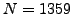
nodes. This graph is un-directed, and there are no self-loops. The
maximal number of arcs is thus
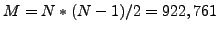. This number
seems huge, compared to the number of arcs observed in either Uetz'
(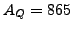) or Ito's (
) that can
be traced between any two nodes of the union graph. In our study case,
the graph obtained by merging Ito's and Uetz' data contains 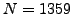
nodes. This graph is un-directed, and there are no self-loops. The
maximal number of arcs is thus
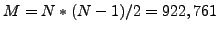. This number
seems huge, compared to the number of arcs observed in either Uetz'
(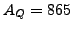) or Ito's ( ) graphs. This means that these two
graphs are sparse: only a very small fraction of the node pairs are
linked by an arc.
) graphs. This means that these two
graphs are sparse: only a very small fraction of the node pairs are
linked by an arc.
The next question is to evaluate the statistical significance of the intersection between the two graphs. For this, we can already compute the size that would be expected if we select two random sets of arcs of the same sizes as above (, 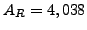).
If the same numbers of arcs were picked up at random in the union
graph, we could estimate the probability for an arc to be found in the
network  as follows:
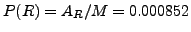. Similarly, the
probability for an arc of the union graph to be part of the network
as follows:
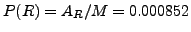. Similarly, the
probability for an arc of the union graph to be part of the network
 is
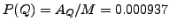. The probability for an arc to be
found independently in two random networks of the same sizes as
is
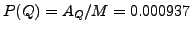. The probability for an arc to be
found independently in two random networks of the same sizes as  and
and  is the product of these probabilities.
is the product of these probabilities.
The number of arcs expected by chance in the intersection is the probability multiplied by the maximal number of arcs.
Thus, at the intersection between two random sets of interaction, we would expect on the average a bit less than one interaction. It seems thus clear that the 122 interactions found at the intersection between he two published experiments is much higher than the random expectation.
We can even go one step further, and compute the P-value of this intersection, i.e. the probability to select at least that many interactions by chance.
The probability to observe exactly 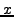 arcs at the intersection is given by the hypergeometrical distribution.
where
By summing this formula, we obtain the P-value of the intersection, i.e. the probability to observe at least arcs at the intersection.
We can replace the symbols by the numbers of our study case.
This probabilty is so small that it comes close to the limit of precision of our program ( 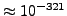).
In summary, the comparison revealed that the number of arcs found in common between the two datasets (Ito and Uetz) is highly significant, despite the apparently small percentage of the respective graphs it represents (14.10% of Ito, and 15.52% of Uetz).
No. Any intersection that you observe in practice might occur by chance, but the limit of precision for the hypergeometric P-value is . Thus, a value of 0 can be interpreted as 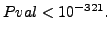
How big are the two graphs that you are comparing ? In principle, compare-graphs can treat large graphs in a short time, but if your graphs are very large (e.g. several hundreds of thousands of arcs), the processing time may exceed the patience of your browser. In such case, you should consider either to install the stand-alone version of NeATon your computer, or write a script that uses NeATvia their Web services interface.